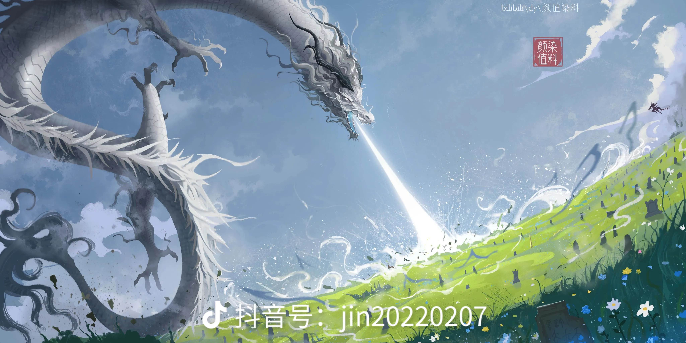

Capítulo 1944 - Espadas Destroem Cemitério Imortal
Esse capítulo ainda não foi revisado, pode conter alguns erros
Roar—!
O tirânico dragão imemorial rugiu enquanto balançava a cauda e se movia, sua velocidade era tão rápida que deixou para trás uma imagem residual branca em seu local original.
Bam.
O Painel de Julgamento Demoníaco foi atingido de frente e caiu como um meteoro.
Duque Long correu imediatamente para reforçá-lo.
Fang Yuan zombou e subiu ao ar de repente, deixando para trás uma imagem residual.
No ar, ele mudou repentinamente de um estado extremamente ativo para extremamente imóvel e sua aura explodiu.
Movimento assassino do caminho da espada — Onda de Espada de Três Camadas!
O movimento assassino ofensivo que foi amplificado em pelo menos mil e quinhentas vezes tinha um poder completamente diferente do passado.
Ondas gigantescas surgiram e encheram o campo de batalha. Cada gota das ondas branco-prateadas tinha a força do caminho da espada e era extremamente afiada.
As ondas de espada não alvejaram o Painel de Julgamento Demoníaco ou Duque Long, mas atacaram o cemitério imortal.
Desde o início, o alvo principal de Fang Yuan era o cemitério imortal.
Duque Long cerrou os dentes enquanto usava a parede de qi do dragão automovível.
A parede de qi só pôde segurar as ondas de espada por oito respirações de tempo antes de desmoronar em pedaços.
Duque Long soltou um gemido abafado enquanto sangue escorria de seu nariz.
Ele queria continuar usando o movimento assassino parede de qi, mas as imponentes ondas de espada já haviam alcançado o cemitério imortal.
A Corte Celestial pôde defender com facilidade anteriormente por causa dos métodos do caminho do espaço de Cang Xuan Zi que podiam encurtar e alongar a distância. Isso deu a Duque Long tempo suficiente para ativar repetidamente a parede de qi para montar defesa.
Mas agora que a vitalidade de Cang Xuan Zi se foi e estava deitada morta no chão, não havia mais proteção dos métodos do caminho do espaço, Duque Long não teve tempo para ativar o movimento assassino parede de qi novamente.
Duque Long não era um rank nove, mas um rank oito como Fang Yuan. As marcas dao de Fang Yuan superavam em muito as dele e ele só podia contar com a última resistência do dragão celestial. Mas lamentavelmente, até agora, embora Duque Long estivesse se tornando mais forte constantemente, ainda havia uma lacuna entre ele e Fang Yuan. Especialmente quando Fang Yuan revelou seus trunfos e mostrou sua forma de ataque mais forte.
“Não—!” Duque Long soltou um rugido triste e furioso ao ver as ondas de espada engolfarem e varrerem o cemitério imortal.
Os Imortais dormindo no cemitério imortal não puderam resistir de forma alguma, foram cortados em pedaços pelas ondas de espada.
Até mesmo a enorme videira celestial vasta estava sendo cortada repetidamente pelas ondas de espada extremamente afiadas. Cang Xuan Zi não acordou durante todo o processo, parecia que ela estava realmente morta!
O Painel de Julgamento Demoníaco subiu ao ar, mas Fang Zheng estava atordoado: “Ele realmente fez isso, ele destruiu o cemitério imortal!”
“O cemitério imortal!!!” Comparado a Fang Zheng, a Fada Zi Wei e Qin Ding Ling tiveram uma reação maior. Eram veteranas de rank oito e membros genuínas da Corte Celestial.
O cemitério imortal não era apenas uma área importante da Corte Celestial, era ainda mais uma terra sagrada espiritual para eles, foi profanada por Fang Yuan agora. Inúmeros predecessores dormindo dentro foram mortos como galinhas sem poder resistir!
“Fang Yuan, eu quero que você morra!” Qin Ding Ling gritou de tristeza.
“Falhamos com todos vocês, seniores…” Com um baque alto, o Velho Zheng Yuan caiu de joelhos no chão no Salão Central Principal, chorando silenciosamente.
A Fada Zi Wei sentiu todo o seu corpo ficando dormente, o cemitério imortal foi gravemente danificado, e como líder e planejadora da Corte Celestial, ela não podia fugir dessa responsabilidade!
“Sou eu, sou incompetente demais…” Lágrimas de tristeza escorreram pelo rosto da Fada Zi Wei.
No Pavilhão do Arrependimento da Imperfeição, as imagens começaram a flutuar intensamente.
A silhueta da Venerável Imortal Constelação Estelar queria agir, mas foi firmemente segurada pela silhueta do Venerável Demônio Ilimitado, ela só podia olhar para Fang Yuan massacrando os membros da Corte Celestial e destruindo o cemitério imortal.
Choque e raiva preencheram o rosto da silhueta da Constelação Estelar, seu olhar era gélido enquanto ela olhava para seu oponente: “Bom, muito bom!”
A silhueta de Ilimitado sorriu: “Isso é muito bom. Quando invadi a Corte Celestial, também queria destruir o cemitério imortal. Mas tendo em mente que a escala dos humanos variantes naquela época ainda era enorme, e pensando nos humanos, não agi.”
“Hmph, e daí se você destruiu o cemitério imortal ou até mesmo toda a Corte Celestial. Contanto que você não destrua o Gu Destino(Fate), com a vontade do céu continuando a favorecer os humanos, o Continente Central ainda pode estabelecer uma segunda Corte Celestial, ou terceiro ou quarto cemitério imortal!” A silhueta da Constelação Estelar retrucou.
“Você está certa.” A silhueta do Venerável Demônio Ilimitado soltou um suspiro: “O Gu Destino(Fate) é a causa fundamental da sua Corte Celestial, contanto que ele permaneça, sua Corte Celestial ficará de pé, não importa quantas perdas sofra. Em vez disso, quanto mais você sofrer derrota, mais resistente se tornará, o velho será eliminado e sangue novo será trazido, você estará mais perto das marés da nova era.”
As eras mudavam constantemente e o cultivo Imortal também se desenvolvia sem parar.
A prosperidade e o declínio do caminho do qi e do caminho da força eram prova disso.
O Venerável Demônio Ilimitado não havia tocado no cemitério imortal naquela época devido a essa consideração. Era melhor poupar os Imortais do caminho do qi e do caminho da força que foram deixados para trás pelas eras do que deixar a Corte Celestial se recuperar absorvendo grandes quantidades de Imortais do caminho da regra, caminho da sabedoria e outros caminhos que surgiriam em resposta a isso.
“Estou realmente curioso, quanto tempo você pode aguentar aí agora que o cemitério imortal foi destruído?” A silhueta de Ilimitado disse com um sorriso.
A silhueta da Constelação Estelar não podia mais ser indiferente: “Você está desconsiderando o quadro geral e trazendo a morte para o governo da humanidade! Você é indigno de ser um venerável humano.”
A silhueta de Ilimitado sorriu friamente: “Meu corpo principal estava preso por essa responsabilidade naquela época, mas agora… a humanidade já não alcançou esse objetivo? Os humanos devem agora buscar um objetivo ainda maior. Você deve saber o que quero dizer.”
A silhueta da Constelação Estelar estreitou os olhos, caindo em um raro silêncio.
“Fang Yuan, vou arrancar seus tendões e queimá-lo até as cinzas!!” Duque Long rugiu, sua raiva e ódio se acumularam a um nível extremo e ele avançou em direção a Fang Yuan sem se importar com nada.
Fang Yuan desviou e não lutou com Duque Long, ele continuou a ativar a onda de espada de três camadas.
Swoosh! Swoosh! Swoosh!
O cemitério imortal estava completamente coberto por ondas de espada, as ondas de espada até cavaram no chão, não deixando nenhum imortal hibernando escapar.
A acumulação de milhões de anos da Corte Celestial foi destruída da noite para o dia!
“Ahhhhh!” O cabelo de Duque Long estava uma bagunça, seu rosto estava distorcido e seus olhos estavam injetados de sangue.
Cada ataque ao cemitério imortal era como um golpe em seu coração; ele estava sangrando internamente e sobrecarregado de dor.
Movimento Assassino Imortal — Descendência de Dragão.
Neste momento crítico, Duque Long rugiu com fúria; suas escamas de dragão roxas voaram e se misturaram com seu sangue, transformando-se em Imortais homens-dragão.
Eles eram de todas as formas e tamanhos, com todos os tipos de aparências. Havia homens-dragão de rank seis, rank sete e até rank oito.
Duque Long não era um Imortal do caminho da escravidão, mas tinha um movimento assassino semelhante.
“Este é um movimento assassino do caminho da transformação que contém a profundidade do caminho humano!” As pupilas de Fang Yuan encolheram enquanto ele ridicularizava: “Duque Long, oh Duque Long, você massacrou a raça dos homens-dragão naquela época, então a razão foi refiná-los em um movimento assassino. Hahaha, como sua ação é diferente de um imortal demoníaco? Você desconsiderou a moral e a ética, pisoteou seu próprio sangue e parentes. Você não apenas matou todos os seus filhos e netos, como até os refinou em fantoches para lutar por você!!”
Duque Long não refutou a acusação de Fang Yuan, tristeza profunda apareceu em seus olhos enquanto ele avançava em direção a Fang Yuan novamente.
Ao mesmo tempo, o grande número de Imortais homens-dragão se espalhou como uma flor desabrochando, bloqueando as ondas de espada, bem como inúmeras bestas do ano.
No nível de Duque Long, não havia de fato fraquezas aparentes.
Uma enorme batalha caótica se desenrolou na Corte Celestial.
O Painel de Julgamento Demoníaco estava abrindo caminhos de sangue através do exército de bestas do ano. Mas a atmosfera dentro do Painel de Julgamento Demoníaco era sufocante, Qin Ding Ling e Fang Zheng estavam ambos em silêncio.
O movimento assassino descendência de dragão de Duque Long estava realmente usando os membros da raça dos homens-dragão, a acusação de Fang Yuan não era falsa. Não era de admirar que Duque Long raramente usasse este movimento, ele foi forçado a usá-lo agora por causa de Fang Yuan.
Muitos Imortais homens-dragão cercaram o dragão espada imemorial.
Fang Yuan sorriu friamente, ele já havia ativado a onda de espada de três camadas, ele agora ativou outro movimento assassino imortal, espada de fio dourado.
Imediatamente, o corpo do dragão espada ficou nebuloso e cada escama emitiu uma luz amarela suave.
Cada escama de repente disparou um fio dourado.
O número de escamas no dragão espada imemorial foi o número de fios dourados disparados, eles eram incomparavelmente rápidos.
Os fios dourados perfuraram todos os obstáculos em seu caminho, os Imortais homens-dragão que cercavam pareciam favos de mel enquanto os incontáveis fios dourados passavam por eles.
Bam bam bam…
Sofrendo um ferimento tão grave, esses Imortais homens-dragão foram incapazes de manter sua forma enquanto detonavam suavemente, voltando a escamas e gotas de sangue.
Fang Yuan limpou todos os inimigos em seus arredores, as ondas de espada que ele havia ativado pouco antes ainda estavam se espalhando enquanto ele cavalgava as ondas para baixo.
O cemitério imortal já estava dizimado, a maior variável foi destruída, e agora, Fang Yuan avançava em direção a Duque Long.
Cang Xuan Zi não tinha vitalidade, seu corpo de videira também estava em um estado miserável. O Painel de Julgamento Demoníaco era incapaz de lutar contra Fang Yuan sozinho, se Duque Long caísse, quem poderia parar Fang Yuan?
Movimento Assassino Imortal — Espada do Coração de Punho de Cinco Dedos!
Garras de dragão cerradas firmemente, a aura de Fang Yuan caiu de repente para um nível quase insignificante.
No entanto, sinais de alerta soavam na mente de Duque Long. Ele disparou para frente, seu qi em forma de dragão violeta-dourado piscava constantemente e sua figura aparecia e desaparecia, movendo-se em todas as direções enquanto ele tentava evadir loucamente.
Primeira espada!
As pupilas de dragão de Fang Yuan emitiram uma luz estranha enquanto uma luz de espada disparava de suas garras.
Rápido! Rápido! Rápido!
A velocidade da luz da espada estava além da crença.
Duque Long tinha acabado de ver a luz disparar das garras de Fang Yuan quando descobriu que a luz da espada já estava na frente dele.
Em uma situação quase impossível, ele virou o corpo à força para o lado.
A luz da espada passou raspando por ele.
Sangue espirrou, um corte grande se espalhou de seu ombro esquerdo até seu peito esquerdo. O corte foi limpo; ossos, escamas e até uma parte do pulmão esquerdo desapareceram completamente.
A espada do coração de punho de cinco dedos era verdadeiramente horrível!
Se isso tivesse atingido a cabeça de Duque Long, ela teria sido cortada imediatamente.
Desde o início da batalha, esta foi a primeira vez que Duque Long sentiu uma ameaça fatal. Fazia muito tempo desde que ele sentiu tal sensação.
Duque Long deu um rugido alto e disparou em direção a Fang Yuan como um raio.
Fang Yuan aplaudiu internamente.
Cada espada na espada do coração de punho de cinco dedos exigia tempo para preparar. Duque Long viu através dessa fraqueza e aproveitou a chance para atacar.
O corpo de dragão de Fang Yuan se moveu enquanto ele recuava, tentando criar alguma distância de Duque Long.
ra preparar. Duque Long viu através dessa fraqueza e aproveitou a chance para atacar.
O corpo de dragão de Fang Yuan se moveu enquanto ele recuava, tentando criar alguma distância de Duque Long.
A vantagem ofensiva do caminho da espada era óbvia, se fosse um oponente comum, Fang Yuan poderia esmagá-lo diretamente. Mas Duque Long era um especialista extremamente poderoso, ele não podia ser descuidado.
